Guida passo-passo per configurare le proprie chiavi API di YouTube e sbloccare l'add-on ufficiale su Kodi senza limiti di quota.
Unisciti al nostro canale TelegramPer iniziare la procedura di creazione, effettua l'accesso con il tuo account Google principale sul portale sviluppatori di Google:
https://console.developers.google.com/
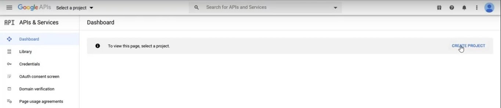
Dalla dashboard principale, clicca sulla tendina dei progetti o direttamente su "Create Project" (Crea Progetto), assegna un nome facoltativo e conferma.
Una volta creato ed entrati nel nuovo progetto, è necessario attivare nello specifico le librerie adatte alla visualizzazione dei video.
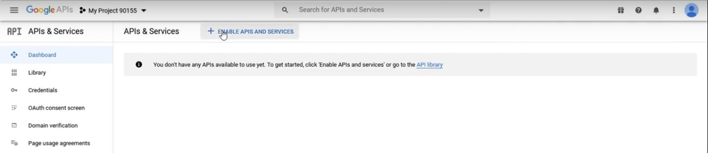
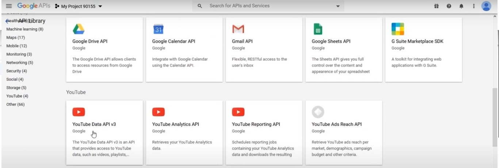
Cerca "YouTube Data API v3" utilizzando la barra di ricerca in alto (oppure sfogliando la libreria delle API), selezionala e fai clic su di essa.
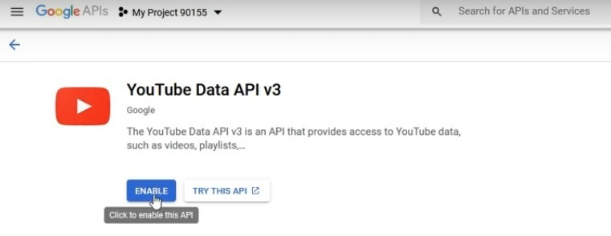
Clicca sul pulsante azzurro "Abilita" (Enable). Una volta completata l'attivazione, la console ti reindirizzerà alla schermata di gestione da cui potremo generare le credenziali.
Spostati nel menu laterale a sinistra, fai clic su Credenziali (Credentials), poi sul pulsante in alto "+ Crea Credenziali" e seleziona API key.
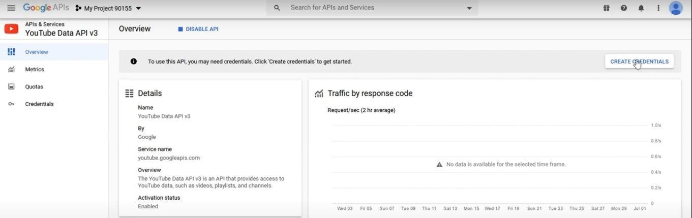
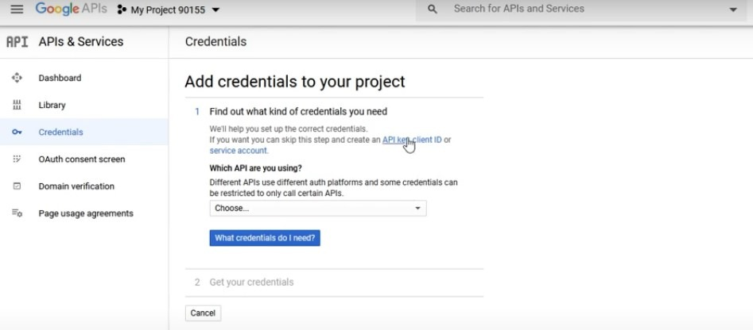
La console ti mostrerà subito la stringa della tua chiave (un lungo codice alfanumerico). Copiala e salvala temporaneamente in un blocco note: sarà la tua prima credenziale da inserire su Kodi.
Per creare le successive credenziali (Client ID e Secret) necessarie per l'accesso all'account, dobbiamo prima inizializzare una semplice schermata di consenso obbligatoria.
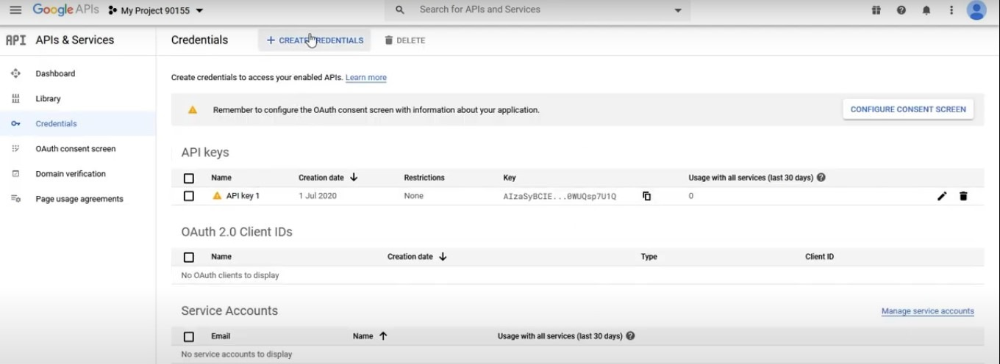
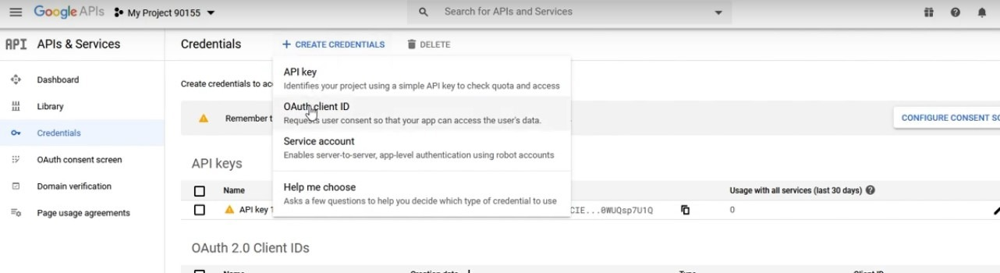
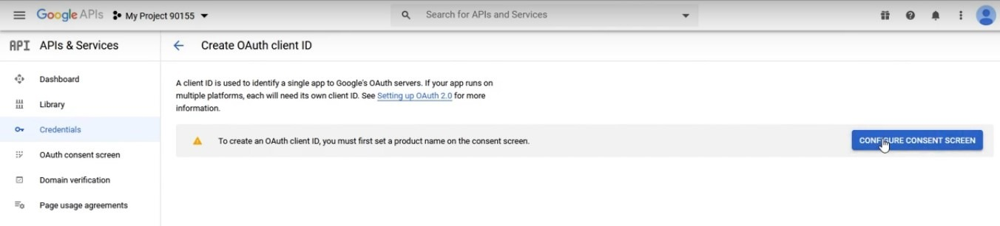
Sulla schermata di configurazione che si aprirà:
Torna alla scheda Credenziali dal menu a sinistra, fai clic su "+ Crea Credenziali" e questa volta seleziona Client ID OAuth.
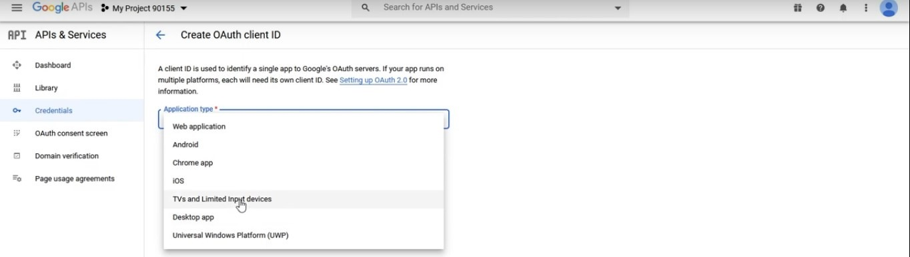
Nel tipo di applicazione, seleziona "TV e dispositivi con input limitato" (TV and Limited Input Devices), inserisci un nome identificativo e conferma cliccando su Crea.
A schermo compariranno le tue due chiavi finali: l'ID Client (Client ID) e il Segreto Client (Client Secret). Copia e conserva anche queste due chiavi.
Avvia Kodi, posizionati sull'add-on YouTube, apri il menu contestuale (tasto destro o pressione prolungata) e scegli Impostazioni.
Spostati sulla scheda API nel menu a sinistra, abilita la configurazione delle API personali (se necessario) e compila i tre campi dedicati con i codici salvati nei passaggi precedenti:
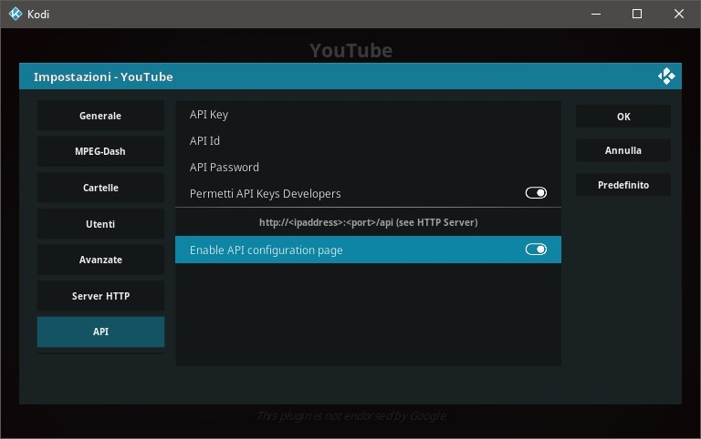
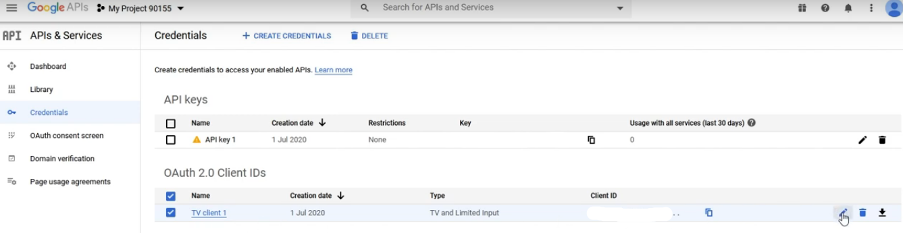
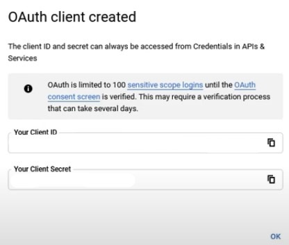
Una volta salvate le impostazioni su Kodi, avvia l'add-on YouTube. Seleziona la lingua italiana ad ogni eventuale wizard iniziale, dopodiché seleziona la voce Accedi (Sign In).
L'add-on genererà un codice temporaneo alfanumerico di sblocco sul tuo schermo.
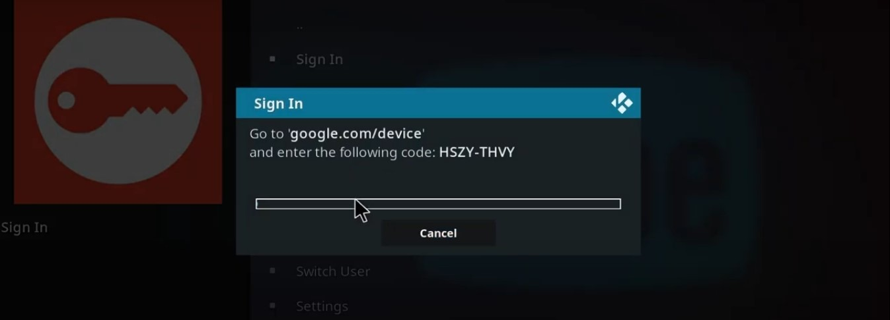
Utilizzando il tuo smartphone o PC, visita la pagina ufficiale di autenticazione Google:
Inserisci il codice visualizzato in TV, seleziona il tuo account Google e consenti l'accesso all'applicazione. Importante: l'add-on richiede due attivazioni consecutive; ripeti quindi lo stesso passaggio non appena Kodi ti mostrerà il secondo codice a schermo.
Complimenti! Ora hai abilitato con successo YouTube sul tuo media center Kodi con le tue API personali, pronte all'uso e senza limiti di visualizzazione.